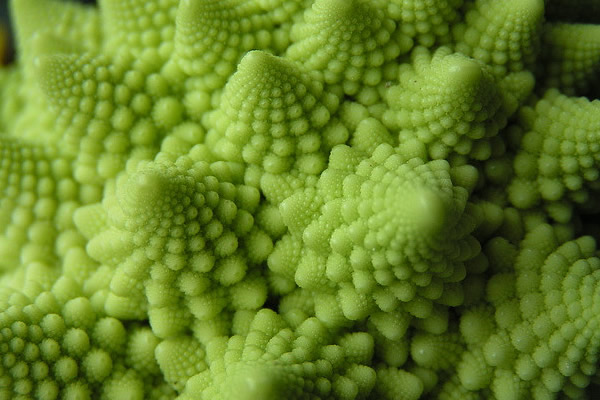

FlowGallery.js
jQuery image gallery
Select Demo:
Default Settings
Equal Image Sizes (no scaling)
Multiple galleries on same page
Controlling gallery through script
Demo
HTML
Javascript

HTML markup...
Javascript code...